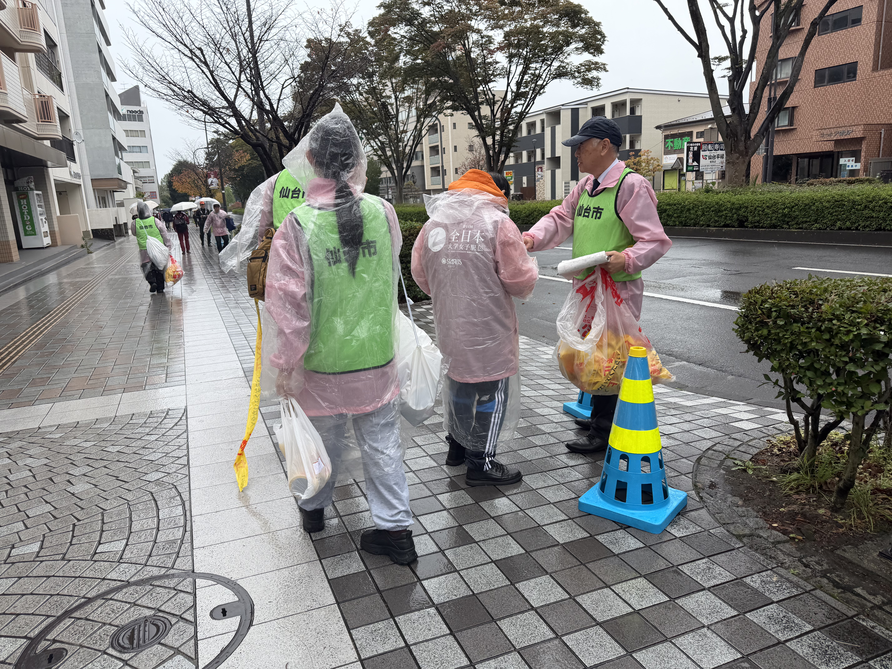
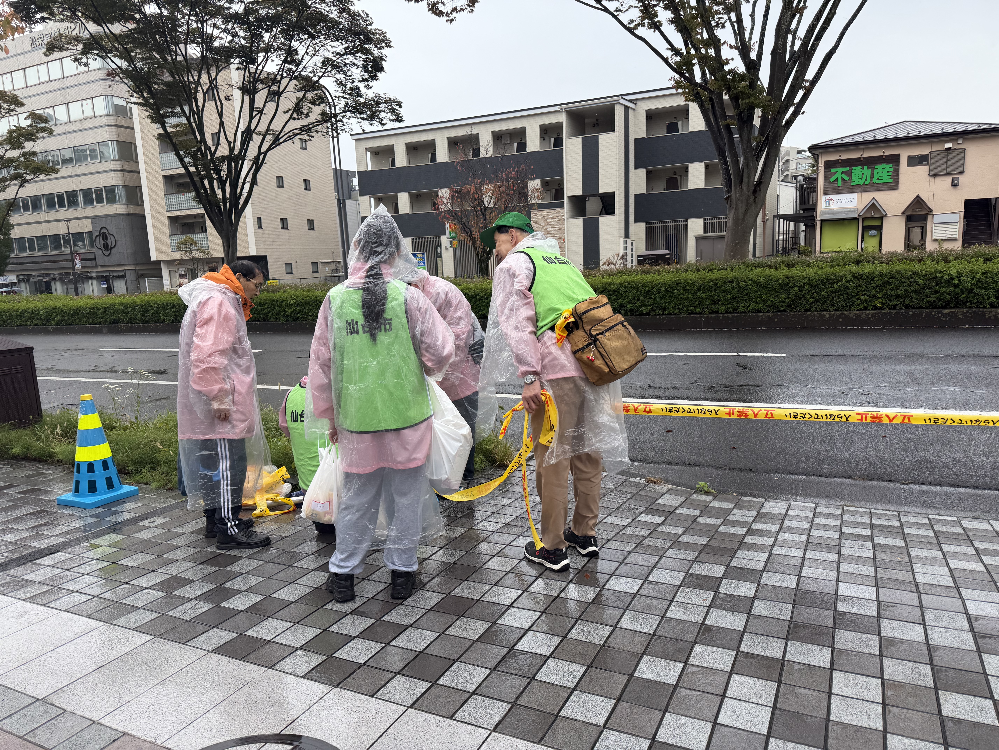

マラソン・駅伝 沿道整理
活動報告：仙台国際ハーフマラソン2026 沿道整理Sendai Half Marathon
5月10日（日）に開催された「仙台国際ハーフマラソン2026」において、当振興会の役員が沿道整理の協力事業に参加いたしました。
ランナーの皆様の熱気と、地域の皆様のご協力に感謝申し上げます。


全日本大学女子駅伝All Japan University Women's Ekiden
第44回全日本大学女子駅伝 沿道整理事業
実施日
2026年10月25日（日）
事業・行事名
第44回全日本大学女子駅伝 沿道整理事業
仙台市内を舞台に開催された「第44回全日本大学女子駅伝」において、当会役員・関係者にて担当区間の沿道整理業務に従事いたしました。雨天の中での活動となりましたが、事故なく無事にランナーの安全走路を確保し、大会の円滑な運営に貢献いたしました。雨にも負けず懸命にタスキをつなぐ大学生ランナーの熱い走りに、沿道からも大きな感動と声援が送られました。
当日の様子（写真ギャラリー）
※写真をクリック（タップ）すると拡大表示されます

クイーンズ駅伝Queens Ekiden
準備中
準備中
準備中
準備中
準備中
準備中